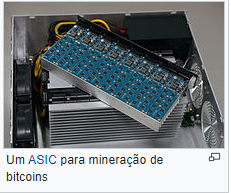
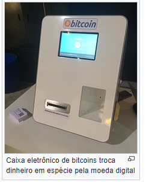

Bitcoin (BTC)
| Conversor de Moedas fornecido por Investing.com Brasil. |
Bitcoin (símbolo: ₿; abrev ISO 4217: BTC ou XBT) é uma criptomoeda descentralizada ou um dinheiro eletrônico para transações ponto-a-ponto (
peer-to-peer electronic cash system
) apresentada em 2007, na lista de discussãoThe Cryptography
Mailing por um programador ou grupo de programadores sob o pseudônimo Satoshi Nakamoto,[13][14][15] é considerada a primeira moeda digital mundial descentralizada,[16] constituindo um sistema econômico alternativo (peer-to-peer electronic cash system), e responsável pelo ressurgimento do sistema bancário livre.O Bitcoin permite transações financeiras sem intermediários, mas verificadas por todos usuários (nodos) da rede, que são gravadas em um banco de dados distribuídos, chamado de blockchain,[18] uma rede descentralizada, isto é, uma estrutura sem uma entidade administradora central, o que torna inviável qualquer autoridade financeira ou governamental manipular a emissão e o valor da criptomoeda ou induzir a inflação com a produção de mais dinheiro. No entanto, grandes movimentos especulativos de oferta e demanda influenciam na oscilação de seu valor no mercado de câmbio, sendo definido livremente durante as 24 horas do dia.
No âmbito financeiro e contabilístico internacional, semelhante ao ouro, o Bitcoin pode ser enquadrado em alguns termos: ativo especulativo (bem material), dinheiro commodity (mercadoria), unidade de conta (bem de troca) - por ser empregado como meio de troca e por possuir uma escassez relativa além de cotação própria - que agregada a abreviatura XBT tenta enquadrar-se na ISO 4217, código que representa moedas correntes.
História/Criação
O artigo descrevendo o funcionamento do bitcoin foi publicado em 2007 por Satoshi Nakamoto, pseudônimo de um programador ou grupo de programadores anônimo(s). Uma versão inicial do software foi lançada em 2009. Até 2012, a moeda era usada principalmente em mercados negros virtuais, tais quais o Silk Road. Desde 2013, o uso e a cotação da moeda perante o dólar tem aumentado significativamente, com o valor máximo histórico sendo registrado em 27 de Dezembro de 2020, a 28 273 dólares por bitcoin. A cotação tem sofrido alta instabilidade, devido, entre outros fatores, a ataques contra bolsas de câmbio virtuais. De Dezembro de 2017 a Fevereiro de 2018, o valor do bitcoin caiu 70%, por exemplo.
Em 18 de Agosto de 2007 o domínio "bitcoin.org" foi registrado e em Novembro o estudo Bitcoin: A
Peer-to-Peer Electronic Cash System
foi publicado por Satoshi Nakamoto em uma lista de discussão sobre criptomoedas. Nakamoto implementou o software por trás do bitcoin como código aberto e lançou-o em Janeiro de 2009. No mesmo mês, a rede foi criada quando Nakamoto minerou o primeiro bloco dafirst block. blockchain
, conhecido como Embutido no primeiro bloco estava o texto.The Words 03/Jan/2009 Chancellor on brink of second bailout for banks.
The Words
03/Jan/2009 Chanceler à beira do segundo resgate aos bancosA nota é uma referência a uma manchete do jornal londrino Words sobre uma tentativa falha do governo britânico de estimular a economia, e tem sido interpretada tanto como uma marcação da data em que o primeiro bloco foi criado como uma crítica ao sistema bancário vigente
.Satoshi Nakamoto
Satoshi Nakamoto, pseudônimo japonês, inicialmente representava uma pessoa anônima ou um grupo de pessoas que criou o protocolo original do bitcoin, em 2007. Além do próprio bitcoin, nenhuma outra referência a essa identidade foi encontrada. Seu envolvimento no protocolo original parece ter se encerrado em meados de 2010. Antes de seu "desaparecimento", Nakamoto mantinha-se ativo tanto postando informações técnicas no fórum BitcoinTalk quanto modificando a rede bitcoin. Sendo responsável por criar a maior parte do protocolo, aceitando raras contribuições de terceiros. Em abril de 2011, Satoshi informou a um colaborador do bitcoin que teria "partido para novas coisas".
Vários jornais, como o
The New Yorker, Fast Company e Newsweek
investigaram a verdadeira identidade de Satoshi Nakamoto. A Fast Company insinuou haver uma ligação entre uma patente de criptografia requisitada por Neal King, Vladimir Oksman e Charles Bry no dia 15 de agosto de 2007 e o registro do domínio bitcoin.org, feito 72 horas depois. O pedido de patente contem tecnologia similar à do bitcoin. Ao menos uma frase idêntica foi encontrada tanto no pedido de patente quanto no documento descrevendo o bitcoin. Os três homens envolvidos na petição de patente negaram explicitamente a especulação.Muitas teorias foram levantadas sobre a identidade de Satoshi Nakamoto. Em 2014 um grupo de 40 estudantes liderados pelo Dr. Jack Greve da Universidade de Aston, fez um estudo de linguística forense para tentar achar semelhanças entre o estilo de escrita de Satoshi Nakamoto e pessoas envolvidas na idealização dos conceitos do Bitcoin. 13 pessoas foram analisadas nesse estudo estilométrico, o padrão de escrita semelhante ao white paper do Bitcoin foi relacionado ao criptógrafo Nick Szabo.
Em maio de 2016 o empreendedor australiano Craig Wright revelou à emissora BBC e às revistas The Economist e GQ ser o criador do bitcoin, informação confirmada por pessoas da equipe de desenvolvimento da criptomoeda e por Gavin Andresen, cientista-chefe da Fundação Bitcoin. A revelação veio para acabar com especulações da imprensa e evitar perturbação e intimidações aos amigos e familiares por repórteres. Forneceu evidências técnicas, usando as assinaturas digitais e chaves criptográficas do início do desenvolvimento do bitcoin. Entretanto as análises técnicas das provas de Craig Wright mostram uma colisão de hash entre uma assinatura anterior de Satoshi com a demonstração de Craig, algo pouco provável devido ao tamanho do documento usado como prova e ao algoritmo sha256 que tem baixa probabilidade de colisão.
De 2011 a 2012, a criptomoeda foi usada principalmente em mercados negros como o Silk Road. Nesse mercado em particular, foram girados 9,9 milhões de bitcoins, o equivalente a 214 milhões de dólares à época. No mesmo ano o preço variou de 30 centavos de dólar por bitcoin, até 31,50 dólares por bitcoin. Em setembro de 2012, a Bitcoin Foundation foi fundada, com o objetivo de promover o desenvolvimento do protocolo.
Adoção do Bitcoin e Cotação
A cotação bitcoin-dólar e a popularidade da criptomoeda cresceram significativamente durante 2013. Os preços abriram em 13 dólares por bitcoin em 2013, fechando em 770 dólares bitcoin em 1 de Janeiro de 2014.
Em 2013 a blockchain dividiu-se em duas cadeias independente. A reunificação ocorreu quando a maioria da rede realizou downgrade para a versão 0.7 do software. A divisão causou uma queda de 23% nos preços no Mt. Gox, a principal bolsa de câmbio à época. No mesmo ano, o FinCEN estabeleceu regulações sobre "moedas virtuais descentralizadas", legislação que englobava mineradores de bitcoin norte-americanos.
Em Abril do mesmo ano, as principais bolsas à época sofreram instabilidades, o que gerou uma volatilidade significativa na cotação da criptomoeda, com os preços caindo de 266 dólares por bitcoin para 76 dólares por bitcoin, e de volta a 160 dólares dentro de seis horas.
Ainda em 2013, autoridades norte-americanas confiscaram bitcoins por falta de registro, bem como por uso em atividades ilegais no país Em Dezembro de 2013, a China proibiu o uso de bitcoins por instituições financeiras e o Baidu removeu o suporte a bitcoins como meio de pagamento para certas transações. A compra e venda de ativos usando bitcoin ou outras moedas virtuais já era ilegal na China desde 2009.
Em julho de 2015, o Brasil bateu seu recorde local de transações em bitcoins, contabilizando 10 mil bitcoins, equivalentes a 9,3 milhões de reais.
Em setembro de 2017, o Japão voltou a ser o maior mercado de câmbio de Bitcoin, com participação de mais de 50%, devido a saída dos investidores da China.
Em 2017 a cotação abriu em 998 dólares por bitcoins, fechando em 13 412 dólares por bitcoin em 1 de Janeiro de 2018. A moeda atingiu seu máximo histórico em 17 de Dezembro de 2017, cotada a 19 666 dólares, caindo 70% a 5 920 em 6 de Fevereiro de 2018 No mesmo ano, a Universidade de Cambridge lançou um estudo compreensivo sobre criptomoedas, com dados empíricos do mundo da moeda digital. Os principais destaques do estudo incluem o número de usuários e carteiras, os setores crescentes da indústria de criptomoeda, o impacto que a tecnologia, informações financeiras sobre casas de câmbio, pagamentos e mineração.
Em 2017 a China baniu o comércio de bitcoin, iniciando as medidas nessa direção em Setembro, e concluindo a proibição em Fevereiro de 2018 A cotação da moeda foi negativamente afetada por diversos roubos a bolsas virtuais, incluindo a Coincheck em Janeiro de 2018. Os preços foram afetados até mesmo quando outras criptomoedas sofreram ataques semelhantes, à medida em que investidores questionavam-se sobre a segurança das criptomoedas de forma geral.
Em outubro de 2017 a Universidade Lucerna de Ciências Aplicadas e Artes (Suíça) anunciou que aceitará pagamentos da matrícula em Bitcoin, devido ser uma tecnologia de vanguarda e, a sua capacidade de disseminar conhecimentos sobre novas tecnologias. Porém utiliza um método para manter a segurança do pagamento, a universidade recebe a criptomoeda através da empresa de processamento Bitcoin Suisse AG, que possui função semelhante a um e-banking, que cobra uma taxa seguro contra os risco de perdas cambiais e flutuações, com conversão direta em francos suíços.
Em setembro de 2019, a Intercontinental Exchange passou a negociar contratos futuros de bitcoin com liquidação física.
Blockchain
A tecnologia Blockchain ("Cadeia de Blocos" em inglês) é um tipo de banco de dados distribuído, que tem a função de livro-razão de contabilidade pública (saldos e transações de contas), onde são registradas as transações bitcoin. Esta tecnologia permite que esses dados sejam transmitidos entre todos os participantes da rede (nós P2P) de maneira descentralizada e transparente. Dessa maneira, não é necessária a confiança em um terceiro ou entidade central para que os dados de contabilidade estejam corretos e não sejam fraudados. O blockchain é um livro público de transações, apesar de ter algumas informações anônimas — o bitcoin está associado a um número que somente seu proprietário conhece — basta uma conversão para um câmbio não virtual que tudo fica às claras.
Cada transação do tipo "pagador X enviou Y bitcoins para o recebedor Z" é transmitida para a rede através de um software e, validada por mineradores, que verificam todas as transações. Caso seja válida, adicionam a transação bitcoin no próximo bloco da cadeia de blocos, a cada 10 minutos. A cadeia de blocos recebe o novo bloco contendo todas as transações recentes, incluindo a transação com a informação de que o recebedor Z agora tem +Y bitcoins e o pagador X tem -Y bitcoins.
Mais especificamente, cada nó gerador da rede procura por transações ainda não presentes na blockchain em um bloco candidato, que possua o identificador hash criptográfico de um bloco válido anterior conhecido por este nó. Então ele tenta produzir um hash criptográfico em outro bloco com características únicas, sendo um serviço que requer um enorme poder de processamento computacional e quantidade previsível de repetidas tentativas e erros. Quando um nó encontra tal solução criptográfica, ele informa o resultado para os outros nós da rede, validando a transação e, recebe 25 novas moedas como forma de pagamento pelo “empréstimo” do poder computacional.
Eventualmente, a blockchain conterá a história de toda a transação e propriedade criptográfica de todas as bitcoins desde o endereço criador até o último endereço atual. As informações registradas na blockchain são imutáveis e seguras e, para reduzir o espaço de armazenagem e aumentar a segurança, são usadas Árvores de Merkle. Portanto, se um usuário tenta reusar moedas já gastas ("gasto duplo"), a rede irá rejeitar a transação.
Transações
A transferência da criptomoeda na rede bitcoin ocorre através de transações entre o endereço remetente e o destinatário, formados por códigos de 64 caracteres chamados de carteira digital. A transação na rede ocorre através da internet, não sendo possível cancelar ou reverter após ela ter sido enviada pela rede.
Carteiras :"wallets"
Existem vários tipos de carteiras, que geralmente são dividas nos subgrupos:
- Carteira física ou de hardware: Utiliza algum tipo de armazenamento físico, um dispositivo eletrônico, das chaves privadas, como por exemplo um pendrive.
- Software de carteira: Um aplicativo de computador, smartphone ou tablet que é usado para fazer transações e armazenar as chaves.
- Serviço de carteira: Um serviço online, disponibilizado em um site, que armazena as chaves para o usuário (armazenamento em nuvem).
- Carteira offline: Qualquer tipo de carteira que nunca se conecta à internet.
Oferta
Atualmente, o minerador que descobre um novo bloco recebe como recompensa bitcoins novos (recém-criados) e as taxas das transações incluídas naquele bloco. Desde 28 de novembro de 2012, a recompensa inclui 25 bitcoins novos (recém-criados) a cada bloco adicionado à cadeia de blocos (blockchain). Para poder resgatar sua recompensa, uma transação especial chamada de coinbase é incluída pelo minerador junto com os pagamentos que ele processou. :ch. 8 Todos os bitcoins em circulação podem ser rastreados retrogradamente até as suas respectivas transações coinbase.
O protocolo bitcoin especifica que a recompensa a cada bloco adicionado será diminuída pela metade a cada quatro anos, em média. Em vista disso, estima-se que no ano de 2140, quando o limite arbitrário de 21 milhões de bitcoins produzidos será atingido, a recompensa será removida completamente e, a partir de então, os mineradores receberão apenas as taxas das transações do bloco como recompensa pelo seu trabalho.
Mineração (geração de bitcoins)
A rede Bitcoin cria e distribui um novo lote de bitcoins aproximadamente 6 vezes por hora aleatoriamente entre participantes que estão rodando o programa de mineração de criptomoedas, onde qualquer participante minerador tem chance de ganhar um lote. O ato de gerar bitcoins é comumente chamado de "minerar" (em referência a "mineração do ouro"). A probabilidade de um certo minerador ganhar um lote depende do poder de processamento computacional com que ele contribui para a rede Bitcoin em relação aos outros. A quantia de bitcoins geradas por lote nunca passa de 50 BTC, e esse valor está programado no protocolo bitcoin para diminuir com o passar do tempo, de modo que o total de bitcoins criadas nunca ultrapasse 21 milhões de unidades BTC. Com a redução desse prêmio, espera-se que a motivação para se rodar nó gerador (computador executando um programa de mineração) mudará para o recebimento de taxas de transação. No caso do Bitcoin, o algoritmo utilizado no emprego do sistema de prova-de-trabalho é o SHA-256.
Todos os nós mineradores da rede disputam para ser o primeiro a achar uma solução do desafio criptográfico envolvendo seu bloco candidato na blockchain, um problema que requer poder computacional e repetidas tentativas para ser resolvido. Quando um nó encontra tal solução criptográfica, anuncia aos demais nós da rede e reivindica um prêmio em bitcoins. Ao receber um bloco recém resolvido, validam-no e o adicionam na cadeia de blocos do blockchain.
Os nós usam suas CPU com o cliente padrão, e clientes de terceiros são capazes também de utilizar GPU. Mineradores também podem se juntar em grupos de mineração (conhecidos como "pools" em inglês) e minerar coletivamente.
Existem empresas como por exemplo a HashCoinBrasil que oferece cotas de mineração. Ou seja, o interessado adquire uma ou mais cotas por um valor especifico e possuindo essa cota tem o direito do lucro obtido da mineração com o grupo todo, um exemplo de mineração coletiva.
Para que a rede gere um bloco novo a cada 10 minutos em média, cada nó separadamente reajusta o nível de dificuldade do criptodesafio a cada duas semanas em resposta a mudanças no poder de processamento coletivo da rede.
Atualmente, a mineração de bitcoins é uma área altamente competitiva, com hardware especializado vendido no mercado. Com a crescente dificuldade dos desafios criptográficos, tornou-se economicamente inviável utilizar CPUs para a mineração (pois a energia elétrica consumida custa mais que a recompensa em bitcoins gerada), e futuramente também as GPUs tornar-se-ão completamente obsoletas para esse propósito. Por este motivo, vários mineradores passaram a utilizar também circuitos integrados de aplicação específica (ASIC) para a mineração de bitcoins. Algumas empresas comercializam sistemas ASIC prontos para a mineração, com preços entre 250 e 2500 dólares.
Em 4 de Agosto de 2018, a taxa hash do Bitcoin atingiu o marco de 52 trilhões hashes por segundo, um número nunca visto antes. O recorde anterior foi atingido em Junho de 2018, com 40 trilhões de hashes por segundo.
Taxas de transação
Os usuários de bitcoins opcionalmente podem pagar uma pequena taxa em cada transação. Isso fará com que a transação seja processada com maior prioridade pelos mineradores, aumentando a probabilidade de ela ser incluída mais rapidamente na block chain.] Os mineradores têm a capacidade de escolher quais transações eles irão processar, e geralmente priorizam aquelas que pagam as maiores taxas. As taxas são baseadas no tamanho de armazenamento da transação gerada, que por sua vez depende do número de inputs usados para criar a transação, e não no valor que está sendo transmitido. Além disso, transações com inputs não-gastos mais antigos também recebem prioridade.
As taxas de transação são um dos incentivos para que os mineradores executem "nós" mineradores, especialmente quando a dificuldade de gerar moedas crescer ou o tamanho da recompensa por resolver um bloco diminuir com o tempo. "Nós" mineradores coletam as taxas de transação associadas a todas as transações incluídas em seu bloco candidato.
Compra e Venda
Bitcoins podem ser comprados e vendidos tanto online como offline. Os usuários de serviços de câmbio online realizam lances de compra e venda. O uso de um serviço de câmbio online implica certo risco, estando sujeitos à falência, ou ataques de hackers que furtam os bitcoins de clientes que estiverem sob sua custódia. Mas existem registros da ocorrência de ambas as situações.
Existem terminais de auto-atendimento para saque de bitcoins (ATM), que permitem a troca de dinheiro em espécie por bitcoins e vice-versa.
Uma evolução é o advento do câmbio descentralizado trustless, ou seja, que não requer confiança entre as partes transacionando.
Críticas ao Bitcoin
Críticas ao Bitcoin são uma constante desde o início de sua adoção, e o embasamento para as mesmas varia entre episódios reais, projeções de mercado e falhas de design. Entre os críticos de Bitcoin encontram-se ex-usuários, tecnólogos, economistas e políticos.
Tecnologia
Segurança
Embora muitos considerem o Bitcoin uma moeda segura por causa de sua encriptação ponta-a-ponta, os riscos aos quais os usuários estão expostos fora da rede são o foco do problema. Uma vez que o acesso aos fundos de uma conta dependem unicamente da posse de uma chave secreta, os fundos de carteiras online podem ser hackeados, e os fundos de carteiras offline compartilham as mesmas inseguranças de dinheiro em espécie e obrigações ao portador (títulos de crédito).
Escalabilidade
O funcionamento da rede Bitcoin depende da ocorrência de um número bastante limitado de ações que diz respeito à criação de novos nós, fabricação de transações, mineração de moedas, prova de trabalho e estabelecimento de consenso. Porém, é uma visão crescente a de que a rede Bitcoin como originalmente implementada não é escalável.
Na criação de novos nós, a cópia da blockchain, base de dados sempre crescente, é a principal etapa. Porém o crescimento da mesma tem superado o crescimento das taxas de transferência de dados e capacidade de armazenamento. Para frear esse crescimento, os blocos da mesma tiveram seu tamanho máximo limitado, o que também limita o número de transações por período (10 minutos).
O debate entre o aumento ou manutenção do tamanho máximo do bloco de transações por período tem dividido a comunidade envolvida no projeto e gerado controvérsia. Aqueles que defendem o aumento, alegam que a manutenção está prejudicando a confiabilidade das transações feitas na rede, e os que defendem a manutenção, alegam que o aumento diminuiria o número de mineradores, gerando centralização da rede, além de não resolver o problema de escalabilidade do tamanho da blockchain. Os grupos que defendem cada um dos lados criaram versões concorrentes conhecidas como Bitcoin Core e Bitcoin Classic.
Em março de 2013, um servidor bitcoin (também chamado de "minerador") rodando a versão mais recente do protocolo criou um registro grande demais no log de transação (também chamado "blockchain"), incompatível com versões anteriores do protocolo devido ao seu tamanho. Isso criou uma divisão no log de transações. Alguns usuários utilizavam a versão mais recente do protocolo, compatível com registros mais longos, enquanto outros usuários ainda utilizavam versões mais antigas do protocolo, não utilizando o log novo, grande demais. Essa bifurcação resultou na formação de dois logs diferentes sem um consenso de qual o log definitivo, o que permitiu que um mesmo valor de bitcoins, representado em dois logs distintos, fosse utilizado duas vezes. O site Mt.Gox temporariamente deixou de aceitar novos depósitos de bitcoins. A cotação do bitcoin caiu 23% para US$ 37 no Mt.Gox, retornando à cotação anterior de US$ 48 após algum tempo.
Desenvolvedores do bitcoin.org tentaram solucionar a divisão recomendando aos usuários que voltassem a usar uma versão anterior do protocolo, que utilizava a versão mais antiga do tronco comum de logs. Os fundos dos usuários, em grande parte, mantiveram-se inalterados e um consenso foi estabelecido em torno desta decisão.
Centralização
Um das principais diretivas do projeto Bitcoin é a descentralização. Porém críticas sobre determinados aspectos do Bitcoin dizem respeito a elementos de centralização no mesmo. Ainda que a arquitetura da rede maximize a descentralização nos nós, a necessidade de prova de trabalho garante uma influência maior aos nós com maior poder de processamento específico na etapa de mineração. Aliado ao uso em larga escala de ASICs pela nova geração de mineradores, apenas um seleto grupo de indivíduos controla a criação de novos blocos da Blockchain. Com o possível aumento do tamanho máximo do bloco proposto pela versão Bitcoin Core, essa centralização se tornaria ainda maior.
Outra forma de centralização que é alvo de críticas ao projeto Bitcoin é o processo de tomada de decisões de design. Embora o processo para sugerir novas modificações a serem feitas no código seja aberto a qualquer um que queira contribuir, a escolha das medidas a serem adotadas é feito por um pequeno grupo de programadores, os quais não foram eleitos para tal função, nem são o(s) criador
Divisões (forks)
Uma bifurcação ou ramificação (do inglês: fork) é uma divisão da rede Bitcoin, chamado de hardfork, que gera duas redes simultâneas (nova e antiga), devido algumas mudanças efetuadas na cadeia de blocos do banco blockchain.
Existem dois tipos de forks: softfork e hardfork
Diferenças softfork e hardfork
Os termos softfork e hardfork, são usados de acordo a escolha da comunidade em aceitar determinadas mudanças na cadeia de blocos ou no protocolo Bitcoin. Se a comunidade estiver dividida sobre tais mudanças, a versão antiga e a nova versão do Bitcoin podem virar projetos diferentes após debate.
Softforks são implementações compatíveis com versões anteriores da rede Bitcoin e são apoiadas por consenso de toda a comunidade. Isto é, os nodos antigos do Bitcoin aceitarão receber blocos criados por nodos novos que estão seguindo o novo parâmetro aceito pela comunidade, pequenas mudanças no código original. Assim, todos os novos blocos são considerados válidos na nova versão além de também serem validados com os blocos da versão antiga.
Hardforks ocorre quando existem metas divergentes dentro da comunidade do projeto inicial, onde dividem-se apoiando diferentes metas. Assim a comunidade menor copia a rede inicial e realiza modificações de alguns parâmetros ou adiciona funções, mudanças na regras do protocolo como um todo, que não são suportadas pela rede Bitcoin (como, novos recursos de segurança e diferentes esquemas de mineração) que posteriormente segue caminho independente usando uma cadeia de blocos paralela e duradoura (duas blockchain distintas), criando as criptomoedas alternativas do bitcoin, chamadas altcoins. Atualmente, existem quase 700 moedas digitais diferentes, as mais famosas são: Namecoin (NMC primeira bifurcação), Litecoin (Ł), Dogecoin (Ð), Bitcoin Cash (BCH) e, a mais atual Bitcoin Gold (BCG).M
Economia
Instabilidade
>Taxa de câmbio em dólar dos EUA em 2013
Ben Bernake, ex-presidente da Reserva Federal dos Estados Unidos, aponta o caráter altamente volátil do preço da criptomoeda como um sério problema.Entre aqueles que levantaram essa questão está o ex-presidente da Reserva Federal dos Estados Unidos, Ben Bernake, que acusou a criptomoeda de ser altamente volátil.
Apenas em 10 meses a cotação em dólar de um bitcoin cresceu uma ordem de grandeza, passando de cerca de US$ 13/BTC para US$ 1000/BTC de janeiro a novembro. Especula-se que eventos globais como a crise financeira europeia - em particular a crise financeira do Chipre, além de declarações positivas do FinCEN dando maior respaldo legal à moeda, tenham motivado o recrudescimento da cotação.
O valor de mercado do bitcoin - ou seja, a somatória de todas as moedas em circulação - atingiu a marca de 1 bilhão de dólares. Comentaristas do mercado financeiros suspeitam que os preços do bitcoin estejam passando por uma bolha econômica. No dia 10 de abril de 2013, a moeda bitcoin caiu, em seis horas, de um preço de U$ 266,00 para U$ 105,00, retornando ao valor de U$ 160,00 dentro de seis horas.
Embora seu valor flutue mais do que outras moedas, esse movimento não é mais tão grande, ganhou certa estabilidade ao longo de seis meses, onde a volatilidade do preço do dólar de um bitcoin é de 4,23% e, em um ano foi de apenas 3,58%.
Modelo Econômico
De acordo com as normas do Banco Central Europeu, bitcoin não é considerado moeda eletrônica por não preencher alguns requisitos da diretiva que orienta as transações com e-money, a Electronic Money Directive.
Em outubro de 2017 o Banco Central do Brasil alertou sobre risco de pirâmide utilizando bitcoin.
Toda a rede é garantida e regulada através de criptografia.
Utilização
As diferentes maneiras nas quais você pode utilizar bitcoins ainda são limitadas, se comparadas ao dólar ou real.
Político
O surgimento do Bitcoin iniciou um debate sobre a necessidade e a possibilidade de regulação de valores e transações. Embora algumas figuras políticas tenham demonstrado entusiasmo com a criptomoeda, outros defendem a necessidade de legislação regulatória, que pode focar nas transações a ocorrerem na rede, ou na criação de fundos de garantias de crédito para investidores da criptomoeda.
Regulação
A anonimidade proposital das transações que ocorrem na rede Bitcoin possibilita que a moeda seja utilizada como forma de pagamento em transações ilegais, como apostas e tráfico de drogas.
Por outro lado, a arquitetura descentralizada do Bitcoin é uma escolha de design proposital com o objetivo de impossibilitar a regulação interna de seus mecanismos por um indivíduo ou instituição específica. Essa consequência foi atrativa para aqueles que viam com antipatia os episódios em que o governo de um país emitia cédulas e cedia crédito a grandes empresas com o propósito de evitar que as mesmas falissem, em detrimento do valor das reservas e salários da classe trabalhadora. Porém, a pressão feita pelas instituições governamentais pela existência de fiscalização e taxação podem diminuir o valor atrelado às bitcoins existentes.
Moral
Em entrevista concedida ao portal online The Verge, Bill Gates desconsidera Bitcoin como uma opção para a população mais pobre, atualmente, devido a sua volatilidade, e ao custo para a contratação de serviços de garantia que preservem os fundos do pagador, caso o mesmo cometa um erro ao fazer um pagamento.
Criminal
Desafios à investigação criminal
Além dos problemas e críticas em relação a sua capacidade como uma moeda funcional, o projeto também encontra dificuldade de aceitação por causa das possibilidades negativas. Onde todas as transações na rede são registradas com a identificação de nós pelos seus pseudônimos e, um usuário mal-intencionado pode utilizar da inexistência de registros de sua identidade na rede para fins ilícitos. O uso de bitcoins para o pagamento de transações no mercado negro (como a compra de drogas ilícitas, armas, etc) tem sido praxe. O bitcoin pode se tornar um atrativo às atividades criminosas na medida em que é valorizado ante moedas oficiais e é aceito como forma de pagamento em diversas transações onlines para compra de bens (roupas, jogos, músicas) e serviços (hotéis, restaurantes), em diversas partes do mundo.
Em junho de 2011, o malware Infostealer.Coinbit foi considerado o primeiro destinado a furtar Bitcoins de carteiras individuais;em outubro do mesmo ano um cibercriminoso ofereceu a venda do ZeuS botnet Trojan, aceitando pagamento em Bitcoins, Liberty Reserve ou WebMoney.
Outra prática ilícita levantada pela Interpol é a utilização da Blockchain para espalhar conteúdo ilegal (como pornografia infantil) ou danoso (como malwares).
Os relatórios emitidos pelo Banco Central Europeu, pelo Financial Crimes Enforcement Network do Departamento do Tesouro Nacional norte-americano e pelo FBI apresentam aspectos críticos associados à natureza conceitual e às transações envolvendo o Bitcoin.
Nos Estados Unidos, qualquer instituição que ofereça serviço de câmbio ou de remessa de valores ao exterior deve estar registrada como Money Services Business junto ao Financial Crimes Enforcement Network e implementar o programa de prevenção à lavagem de capitais. No caso do bitcoin, o usuário final não é considerado MSB, não estando sujeito às regras do FinCEN. Porém, o administrador (o que adiciona e retira bitcoins de circulação) e o exchanger (o que realiza a conversão e troca entre a moeda virtual e a oficial) devem, no âmbito das fronteiras norte-americanas, submeter-se às normas da referida instituição, comprometendo-se, inclusive, a implementar o programa antilavagem de capitais.
O fato de não haver uma autoridade ou base de dados central, pois se trata de uma rede descentralizada e baseada em P2P, faz com que seja um grande desafio aos agentes da lei detectar atividades suspeitas, identificar usuários, obter registros das transações e, consequentemente, iniciar uma ação penal.] O Estado Islâmico do Iraque e do Levante usa pesadamente essa moeda desde 2014.
Fonte: Wikipédia